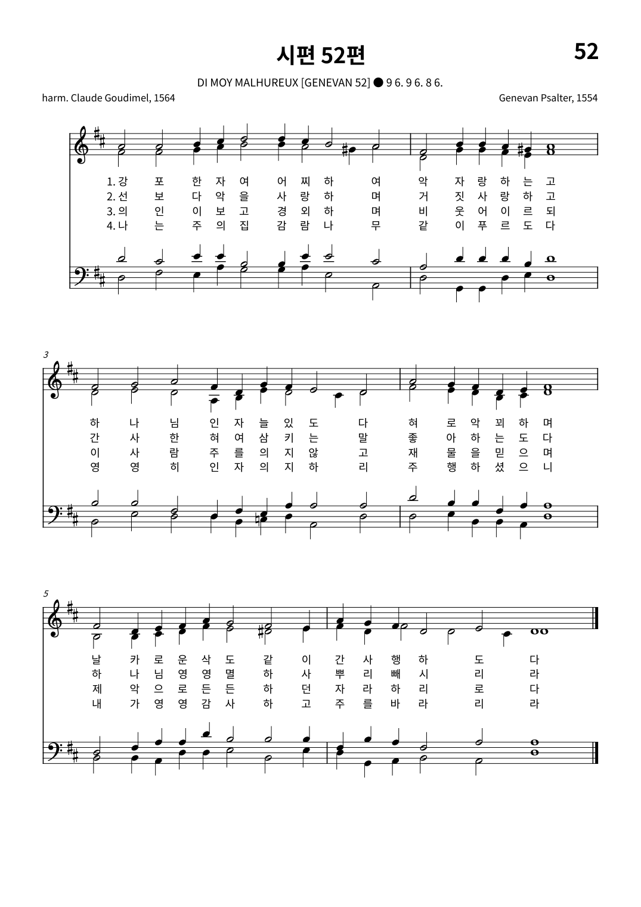

Psalm 52
DI MOY MALHUREUX [GENEVAN 52] · 9 6. 9 6. 8 6.
English title: Why Boast Evil, O Man So Mighty?
Tune: Genevan Psalter, 1554 · Harmony: Claude Goudimel, 1564 · Lyrics: Korean adaptation of Psalm 52 from the Korean Revised Version (AI draft adaptation · not yet theologically reviewed) · 4 stanzas
Score PDF MusicXML (for printing) MusicXML (for accompaniment, with prelude and repeats) Read Psalm 52 (Korean Revised Version)
Score
← Psalm 51 ListAccompaniment (in preparation)Psalm 53 →
Lyrics (Korean)
Stanza 1 (Ps. 1~2절)
강포한 자여 어찌하여
악 자랑하는고
하나님 인자 늘 있도다
혀로 악 꾀하며
날카로운 삭도 같이
간사 행하도다
강포한 자여 어찌하여
악 자랑하는고
하나님 인자 늘 있도다
혀로 악 꾀하며
날카로운 삭도 같이
간사 행하도다
Stanza 2 (Ps. 3~5절)
선보다 악을 사랑하며
거짓 사랑하고
간사한 혀여 삼키는 말
좋아하는도다
하나님 영영 멸하사
뿌리 빼시리라
선보다 악을 사랑하며
거짓 사랑하고
간사한 혀여 삼키는 말
좋아하는도다
하나님 영영 멸하사
뿌리 빼시리라
Stanza 3 (Ps. 6~7절)
의인이 보고 경외하며
비웃어 이르되
이 사람 주를 의지 않고
재물을 믿으며
제 악으로 든든하던
자라 하리로다
의인이 보고 경외하며
비웃어 이르되
이 사람 주를 의지 않고
재물을 믿으며
제 악으로 든든하던
자라 하리로다
Stanza 4 (Ps. 8~9절)
나는 주의 집 감람나무
같이 푸르도다
영영히 인자 의지하리
주 행하셨으니
내가 영영 감사하고
주를 바라리라
나는 주의 집 감람나무
같이 푸르도다
영영히 인자 의지하리
주 행하셨으니
내가 영영 감사하고
주를 바라리라